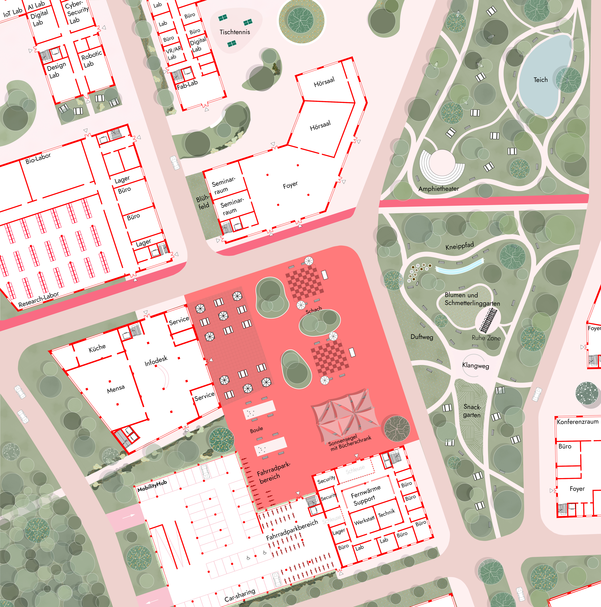

Urban Design Competition · 2026 · Dormagen
Smart Industrial Campus Dormagen

Dormagen is undergoing a profound transformation. Strategically located between Cologne and Düsseldorf, the city possesses enormous potential that often feels isolated. Currently it exists in a spatial and functional state of limbo — a passive "in-between."
Strong infrastructural drivers like the Rhine River, the railway lines, and the highly secure CHEMPARK in the south remain disconnected from the urban core. The former sugar factory site in particular — once the cradle of Dormagen's industrialization and a vacant wasteland since 2008 — acts as a physical and social barrier between the city centre and the industrial zone.
From an isolated "in-between" to a vibrant city right in the middle.
We are dissolving this sharp division. The new Campus Mitte does not compete with the existing urban fabric — instead, it strengthens the historic downtown. By reactivating Kölner Straße as an urban main artery and implementing hybrid building structures — ranging from flexible halls to small-scale developments — we gently and fluidly integrate the site into the surrounding neighbourhoods.
Moving away from its previous monofunctionality, the site becomes a dynamic, mixed-use district that closely weaves together work, research, education, and experimentation — setting new standards for business and digitalization in the Rhenish mining region, while simultaneously providing significant social and functional added value for the community.



The complete project documentation across three A0 presentation boards — from initial analysis and concept development through to the final masterplan and detailed sections.